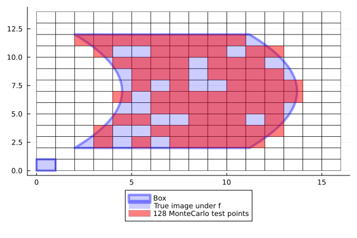

MonteCarloBoxMap
The simplest technique for discretization is a Monte-Carlo approach: choose a random set of points (sampled according to a uniform distribution) within a box and record which boxes are hit by the point map.
GAIO.MonteCarloBoxMap — FunctionBoxMap(:montecarlo, map, domain::Box{N}; n_points=16*N) -> SampledBoxMapConstruct a SampledBoxMap that uses n_points Monte-Carlo test points.
BoxMap(:montecarlo, :simd, map, domain::Box{N}; n_points=16*N) -> SampledBoxMapConstruct a CPUSampledBoxMap that uses n_points Monte-Carlo test points. The number of points is rounded up to the nearest multiple of the cpu's SIMD capacity.
BoxMap(:montecarlo, :gpu, map, domain::Box{N}; n_points=16*N) -> GPUSampledBoxMapConstruct a GPUSampledBoxMap that uses n_points Monte-Carlo test points.
Requires a CUDA-capable gpu.
Example
julia> n_points = 128128julia> F = BoxMap(:montecarlo, f, domain, n_points = n_points)SampledBoxMap with 128 sample pointsjulia> p = plot!( p, F(B), color=RGBA(1.,0.,0.,0.5), lab="$n_points MonteCarlo test points" )Plot{Plots.GRBackend() n=4}
